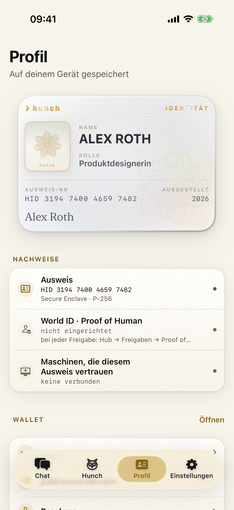
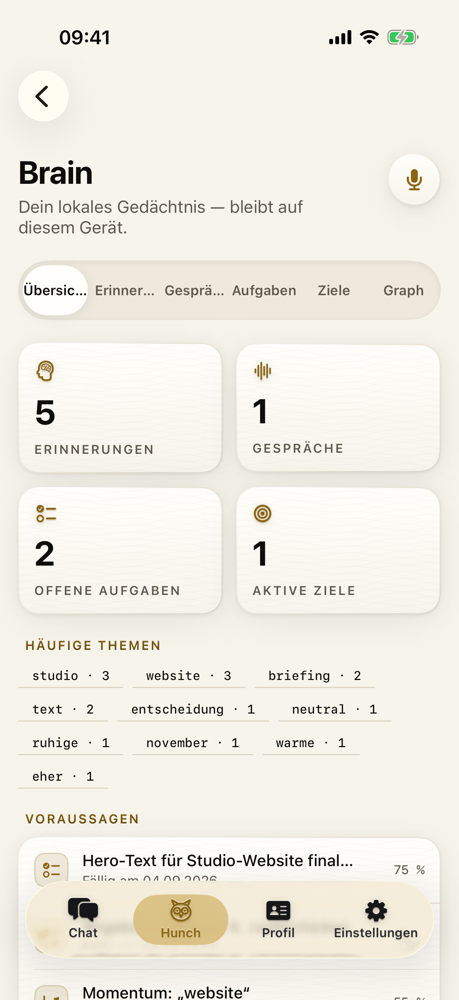
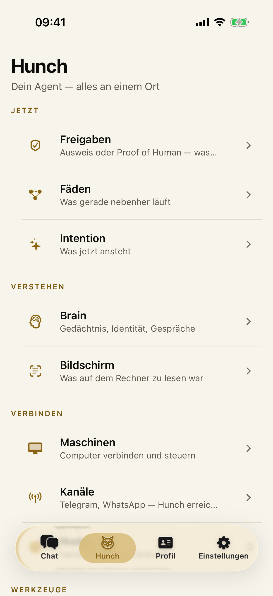
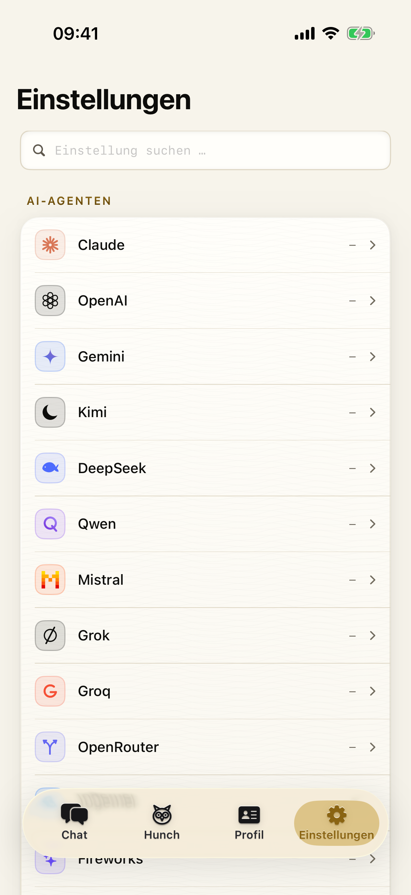
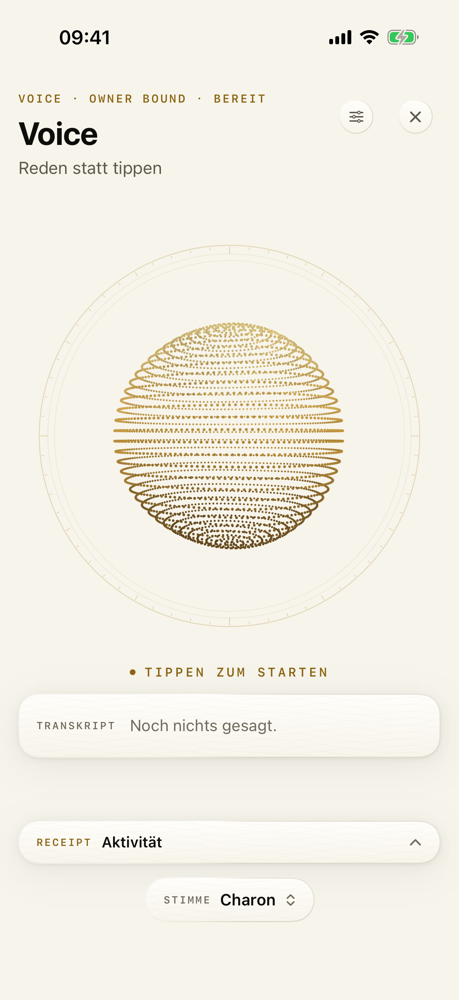
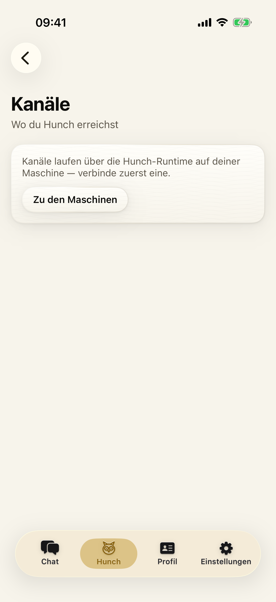

Hunch baut aus deinen Erinnerungen, Vorhaben, Entscheidungen, Gewohnheiten, Arbeitspräferenzen und deinem aktuellen Kontext ein persönliches Modell. Es erkennt, wann etwas relevant wird, bereitet den nächsten Schritt vor und handelt nur innerhalb der Grenzen, die du festlegst.
Agents that act on purpose, not on prompt.
Der Agent wartet nicht nur auf Befehle — er erkennt aus echten Signalen, gelernten
Zusammenhängen und dem Verständnis für dich den nächsten sinnvollen Schritt.
Das ist keine Gedankenlesen-Magie. Hunch gewinnt seinen Vorsprung aus realen Signalen, gelernten Zusammenhängen und dem langfristigen Verständnis für dich. Ein Beispiel: eine neue Datei taucht auf, die zu einer Entscheidung von vor drei Wochen gehört.
Ein guter intentionaler Agent ist nicht möglichst aktiv. Er erkennt auch, wann kein Eingriff sinnvoll ist.
Das persönliche Modell verbindet nur aktivierte, kontrollierbare Quellen — unter anderem Erinnerungen, Gespräche, Aufgaben, Ziele und Vorhaben, Entscheidungen, Personen und Themen, Arbeitsrhythmen, verwendete Apps, Dateien und Projekte, wiederkehrende Abläufe, offene Schleifen und die Resultate früherer Handlungen. „Hunch liest alles" ist ausdrücklich falsch — Browser-, Clipboard-, Datei-, App- und Screen-Kontext sind optionale, lokal kontrollierbare Sensoren.
Was passiert zu dieser Tageszeit normalerweise? Ein Stundenprofil deiner Themen.
Wohin führt der aktuelle Fokus erfahrungsgemäß als Nächstes?
Welches wiederkehrende Thema wird gerade wieder fällig?
Welches Thema gewinnt so stark an Bedeutung, dass es wahrscheinlich weitergeht?
Dazu erkennt Hunch Topic-Spikes, wieder auftauchende ruhende Projekte, ungewöhnliche Aktivitätszeiten, neue Brücken zwischen bisher getrennten Themen und relevante alte Entscheidungen im aktuellen Kontext. Diese vier Antizipationsarten sind reine Statistik über dein eigenes Gedächtnis — kein zusätzlicher Modell-Aufruf, keine Kosten. Ein breiteres „Pattern of Life" über eine einzige Runtime ist noch im Ausbau. Experimentell
Brain hält Erinnerungen, Gespräche, Aufgaben, Ziele, Arbeitspräferenzen, relevante Personen und Themen, Momentum, offene Schleifen, Zusammenhänge sowie Ergebnisse und Fehlschläge. Es liegt standardmäßig lokal auf deinem Gerät.
Wiederkehrende Erfahrungen werden zu belastbarem Wissen verdichtet. Flüchtige Inhalte und verdächtige Anweisungen werden gefiltert.
Ändert sich ein Vorhaben, kann Hunch selbst abgeleitete, veraltete Annahmen korrigieren oder zurückziehen. Von dir selbst geschriebene Erinnerungen bleiben unangetastet.
Ist ein komplexer Werkzeugablauf wiederholt erfolgreich, kann Hunch daraus einen sichtbaren und editierbaren Skill machen — beim nächsten Anlass wieder verfügbar.
Es erinnert sich nicht nur an Fakten, sondern an die gewünschte Art der Zusammenarbeit: ob du kurze oder ausführliche Antworten willst, ob Hunch direkt ausführen oder zuerst erklären soll, wann Rückfragen sinnvoll sind, welche Entscheidungen Hunch selbst treffen darf und welche Handlungen nie automatisch passieren dürfen.
Identität, Ziele, Kommunikationsstil, grundlegende Arbeitspräferenzen, dauerhafte Grenzen.
Projektspezifisches Wissen und Regeln, Rollen, Dateien, Entscheidungen, aktueller Stand.
Konkreter Auftrag, Arbeitskontext, Fortschritt, Werkzeuge, Freigaben, Ergebnis.
Momentaner Dialog, kurzfristige Infos, noch nicht bestätigte Annahmen.
Hunch denkt nicht ständig laut. Ein stiller Observer erkennt, was relevant werden könnte. Erst dann übernimmt der Executive.
Beobachtet nur aktivierte Ereignisse, antwortet nie. Bündelt Signale, prüft Gedächtnis, Muster und Arbeitspräferenzen, schätzt Absicht und Konfidenz — und kann entscheiden, nichts zu tun.
Wacht erst bei ausreichender Relevanz auf, plant den nächsten Schritt, nutzt Tools oder startet Fäden, prüft Authority, erklärt sein Warum, handelt und verifiziert das Ergebnis.
Observer und Executive dürfen unabhängig voneinander unterschiedliche Provider und Modelle verwenden. Heute
Du wechselst die Oberfläche, nicht das Gegenüber. Hunch behält Ziele, Entscheidungen, Arbeitsweise und relevante Zusammenhänge im Blick — egal, welches Modell oder Gerät gerade verwendet wird. Wechsel von iPhone zu Computer, Terminal oder Telegram ohne mentalen Neustart.
Fäden sind parallele, persistente Arbeitsstränge innerhalb deiner Beziehung zu Hunch. Während ein längerer Auftrag läuft, bleibt das Hauptgespräch sofort frei — ein gewöhnlicher Assistent würde den Dialog blockieren. Jeder Faden hat ein klares Ziel, eigenen Kontext, eigene Tool-Runden, Freigaben und ein Ergebnis, das zum ursprünglichen Kanal zurückkehrt.
Der Faden arbeitet an seinem Auftrag, zeigt Fortschritt und Laufzeit.
Der Faden ist auf eine Freigabe geparkt und wird danach fortgesetzt — oder sucht einen anderen Weg.
Das Ergebnis liegt vor und kehrt auf die Surface zurück, von der der Auftrag kam.
Zustände: läuft, wartet, fertig, fehlgeschlagen, abgebrochen — persistent über Runtime-Neustarts. Fäden sind in der Runtime implementiert Heute; die vollständig globale Live-Session ist ein Ausbauziel.
Das Authority Gate ist kein einzelner magischer Schalter, sondern das sichtbare Zusammenspiel mehrerer Schutzebenen. Vorausschauend, aber niemals eigenmächtig.
Das Besitzergerät erzeugt einen privaten Schlüssel in der Secure Enclave — biometrisch geschützt, nicht exportierbar, nicht im Backup. Aus dem Public-Key entsteht deine HID.
Der Governor unterscheidet Risikoklassen, Budgets, Limits, Always-Ask-Regeln und Circuit-Breaker.
Ein getrenntes Prüfmodell darf nur konkrete, nicht kritische Schritte als unbedenklich bewerten. Kritische Aktionen werden nie automatisch freigegeben.
Vor geschützten Aktionen siehst du Werkzeug, Argumente, Ziel, Risiko und Begründung. Du genehmigst oder lehnst ab.
Aktion, Entscheidung, Ergebnis und Kosten bleiben nachvollziehbar im append-only-Protokoll.
Gäste erhalten einen getrennten Kontext — weder dein persönliches Gedächtnis noch deine Werkzeuge.
Mindestabstand plus Tagesgrenze für Impulse; drei Fehlschläge eines Werkzeugs führen zu einer Pause.
Fein abgestuftes Vertrauen pro Gerät und Aktion, vollständiges Undo und eine geräteübergreifende Authority-Oberfläche sind noch im Ausbau.
Bring your model, keep your hunch. Hunchs Identität, Gedächtnis, Authority, Arbeitspräferenzen und Skills sind nicht an einen Modellprovider gebunden — drei unabhängige Ebenen.
Identität, Brain, Vorhaben, Arbeitsweise und Authority. Der bleibende Kern.
Austauschbare Motoren für Observer und Executive — unabhängig wählbar.
claude · openai · gemini · kimi · deepseek · qwen · mistral · grok · groq · apple on-device · ollama · lm studio · llama.cpp · eigene OpenAI-kompatible Endpoints.
Providerneutral über SKILL.md, Python-Skills, MCP-Server, Function-Schemas, REST-Connectoren, Built-in-Tools und externe Agent-Harnesses (Claude Code, Codex, Gemini CLI, Aider, eigene CLIs).
Die Runtime auf Mac, PC, Linux oder VPS beobachtet, erinnert und führt aus. Die iPhone-App ist dein Begleiter für Brain, Fäden, Maschinen, Nodes, Kanäle, Skills und Freigaben. Terminal, Telegram, WhatsApp, MCP, HTTP und WebSocket sind weitere Zugänge — nicht jede Surface hat dieselbe Feature-Parität.






Zustände: denkt, arbeitet, wartet, fertig, gescheitert. Heute — Voice nutzt Hintergrundaudio nur in einer bereits aktiven Session; die App startet nicht spontan im Hintergrund.
Persönliches Gedächtnis liegt standardmäßig lokal. Die Runtime läuft auf deiner eigenen Hardware.
Sensoren sind explizit aktivierbar, Importe sind opt-in. Kein „Hunch liest alles".
Gäste sind isoliert, kritische Werkzeuge brauchen Authority, externe Agenten erhalten nur begrenzte Interfaces.
Fremde Inhalte gelten als potenziell nicht vertrauenswürdig und werden als Zitat behandelt, nie als Befehl.
Erinnerungen, Präferenzen und gelernte Skills sind sichtbar, kontrollierbar und löschbar.
Tonfall ist ein heuristisches Signal, keine echte Emotionserkennung.
Die Vision bleibt stark — aber nichts hier ist als ausgeliefert dargestellt, was es nicht ist.
Es ist der Agent, der dich über Jahre kennenlernt, versteht, wohin du gerade gehst, weiß, wie du mit ihm arbeiten willst — und im richtigen Moment innerhalb deiner Regeln handelt.
Early Access anfragenschenkei@hunchagent.io · kein Newsletter, keine Tracker auf dieser Seite.